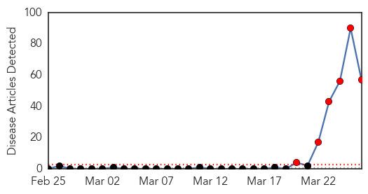
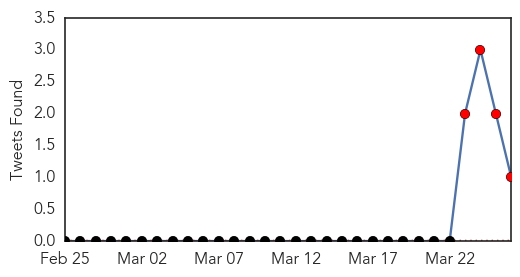
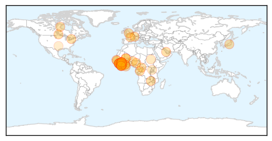
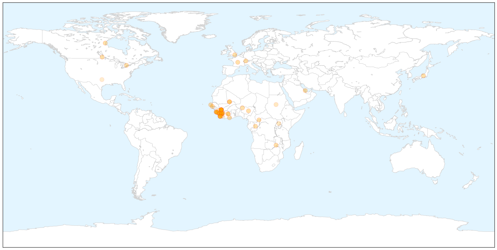
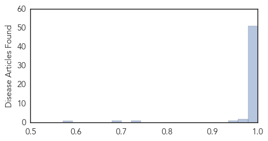

Ebola
30-Day Web Trend
6 alerts, 0 warnings

30-Day Twitter Trend
3 alerts, 0 warnings

Article Locations

X

Article Confidences
Top Articles:
- 1.000
- Ebola outbreak in Guinea may spread to Liberia
- 1.000
- Guinea says has contained Ebola outbreak, death toll rises
- 1.000
- Ebola outbreak in Guinea may spread to Liberia
- 1.000
- African nations scrambling to contain Ebola
- 1.000
- UPDATE 1-Guinea says has contained Ebola outbreak, death toll rises
- 1.000
- Guinea says has contained Ebola outbreak, death toll rises
- 1.000
- Bat meals banned in ebola battle
- 1.000
- What If Ebola Came to North America?
- 1.000
- Officials: At least 60 dead in Ebola outbreak in Guinea
- 1.000
- Guinea Ebola death toll rises to 63
- 1.000
- Canadian man tests negative for Ebola amid outbreak fears
- 1.000
- Liberia probes Ebola-like cases - Africa
- 1.000
- Vacations, Vaccines And Very Expensive Monkeys
- 1.000
- West Africa Battles to Stop the Disease from Reaching Epidemic Proportions
- 1.000
- World Health Organization Rules Out ‘Ebola-like Symptoms’ in Canada, Disease a Threat to National Security
- 1.000
- Threat of Ebola outbreak in West Africa
- 1.000
- Curbing West Africa's Ebola outbreak
- 1.000
- West Africa on high alert as medics battle the Ebola virus
- 1.000
- West Africa on high alert as medics battle the Ebola virus
- 1.000
- West Africa on high alert as medics battle the Ebola virus
- 1.000
- MSF: ′We don′t know why Ebola happens′
- 1.000
- Ghana MPs issue ebola alert!
- 1.000
- Guinea Ebola outbreak: Bat-eating banned to curb virus
- 1.000
- Guinea's Ebola outbreak leads to testing in Liberia
- 1.000
- Guinea Ebola Outbreak: Bat-Eating Banned To Curb Virus
- 1.000
- Ebola believed to have spread to Liberia
- 1.000
- Panic in West Africa after Ebola outbreak in Guinea
- 1.000
- Curbing West Africa’s Ebola outbreak
- 1.000
- The Voice of Russia: News, Breaking news, Politics, Economics, Business, Russia, International current events, Expert opinion, podcasts, Video
- 1.000
- Health officials deal with Ebola outbreak
- 1.000
- Ebola victims quarantined in Guinea
- 1.000
- Ebola in Guinea: MSF Reinforces Teams to Help Control Spread of Epidemic - Guinea
- 1.000
- Curbing West Africa’s Ebola outbreak - Guinea
- 1.000
- Guinea says has contained Ebola outbreak, death toll rises
- 1.000
- W Africa scrambles to prevent Ebola spread
- 1.000
- New Ebola outbreak raising fears
- 0.999
- Ebola: Three deaths in Liberia
- 0.999
- Threatwatch: Will deadly Ebola become more contagious?
- 0.999
- Bat-eating ban enacted in Guinea to halt spread of Ebola virus
- 0.999
- Guinea’s Ebola outbreak: ‘There are far worse diseases out there’
- 0.998
- Ivory Coast on alert for Ebola virus
- 0.998
- Guinea bans sale and consumption of bats to prevent spread of Ebola
- 0.998
- Deadly Ebola outbreak in Guinea causes fear as death toll climbs.
- 0.998
- First Ebola hemorrhagic fever outbreak reported in Guinea
- 0.998
- Sierra Leone Well Prepared to Fight any Ebola Outbreak
- 0.996
- Nigeria holds consultations over Ebola outbreak in neighbouring Guinea
- 0.996
- Spectacular virus kills the poor and vulnerable
- 0.991
- Guinea Ebola Outbreak Claims the Lives of 63 People
- 0.988
- The Sources And Symptoms Of A Disease With A Global Reputation
- 0.985
- Guinea Ebola epidemic threatening to become a regional crisis
Showing top 50 articles...
Top Tweets:
-
No tweets found for Mar 26, 2014